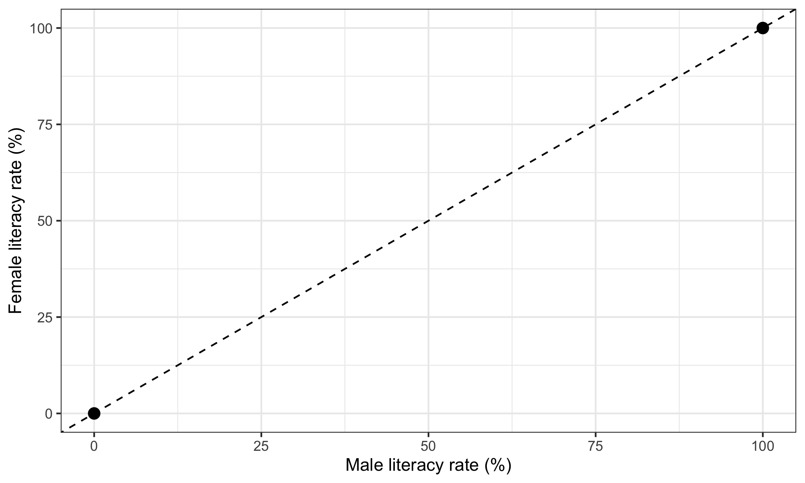
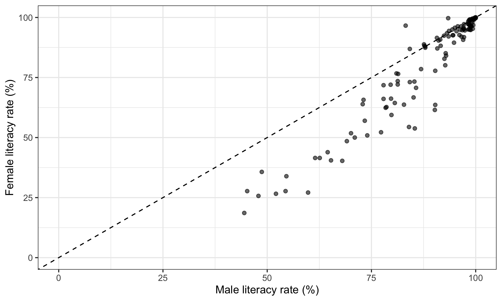
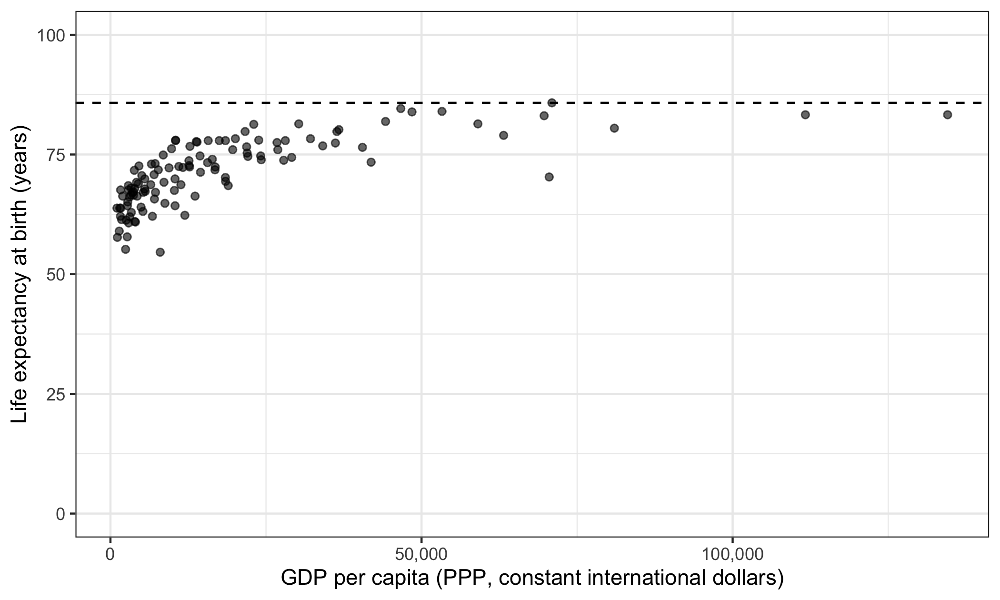
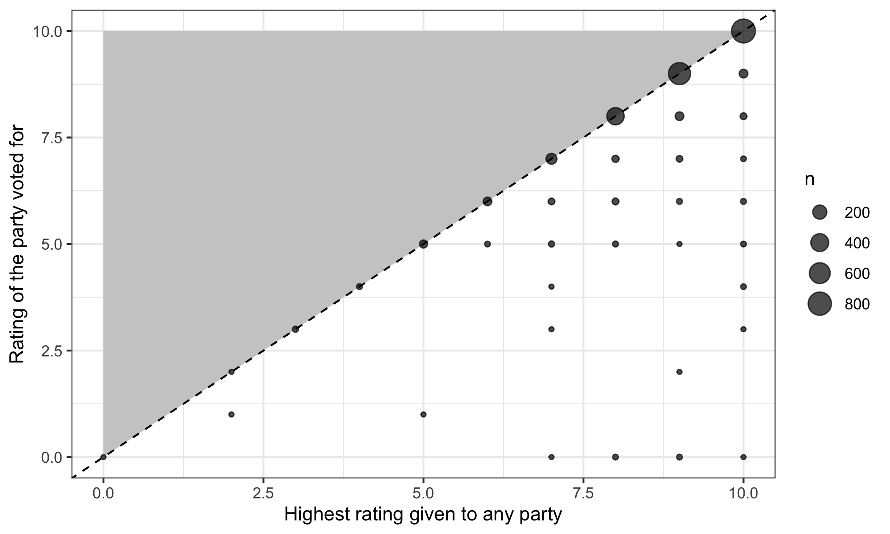

library(ggplot2)
library(dplyr)
world <- readr::read_csv("data/world.csv", show_col_types = FALSE)4 Thinking logically and visually about data
Every other session in this course is about getting something out of data. This one is about what you can say before you look at any.
That sounds like a strange thing to spend a seminar on. It is not. Most quantitative social science consists of putting variables into a model and reporting what comes out, and a result reported that way can only ever be compared against nothing. If you have no idea what the relationship could look like, you have no way of telling a sensible answer from an absurd one — and, as we have already seen twice, absurd answers do not announce themselves.
The material here comes from Rein Taagepera’s Logical Models and Basic Numeracy in Social Sciences. The lecture covers more of it than this chapter does. What is written up here is the part you will use in R every week from now on: the limits of a scale, and how to put what you know onto a plot.
world holds 119 countries with a handful of indicators from the World Bank. We use it because its variables have real limits.
The plots below use
ggplot2, which is the subject of next week’s session. For now, read the code as instructions rather than as something to memorise — take these points, put this on the horizontal axis and that on the vertical, draw a line here. Next week the mechanics get taken apart properly.Four pieces recur.
ggplot()starts a plot and says which data it uses.labs()sets the axis titles.theme_bw()swaps the grey background for a plain one. And the layers are joined with+rather than the pipe.
4.1 What you know before you look
Take a concrete question. Across countries, how is the literacy rate among women related to the literacy rate among men?
Before any data, you already know several things.
Both scales have hard limits. A literacy rate is a share of a population. It cannot be below 0% or above 100%. So the whole of the relationship lives inside a square: 0 to 100 on both axes, and nowhere else. That square is not a plotting choice; it is a fact about what the numbers mean.
There are anchor points. The corner at (0, 0) is a real point, not just a corner: a country where no man is literate and no woman is literate. So is (100, 100). Any curve describing the relationship has to pass through both, because a country at one extreme on one variable must be at the same extreme on the other. Nothing else is possible.
The two variables are on the same scale, so the diagonal means something. On the line, women and men are equally literate. Above it, women are more literate; below it, men are. That line is the comparison the question is really asking about.
And the association must be positive. Whatever raises literacy — schools, wealth, peace — raises it for everybody. There is no mechanism by which men become more literate as women become less so.
That is four substantive statements, and we have not opened the data.
ggplot() +
geom_abline(
intercept = 0,
slope = 1,
linetype = "dashed"
) +
annotate(
"point",
x = c(0, 100),
y = c(0, 100),
size = 3
) +
coord_cartesian(xlim = c(0, 100), ylim = c(0, 100)) +
labs(
x = "Male literacy rate (%)",
y = "Female literacy rate (%)"
) +
theme_bw()
geom_abline() draws a straight line from an intercept and a slope; intercept 0 and slope 1 is the diagonal. annotate("point", ...) puts markers at given coordinates without needing a data frame. coord_cartesian() fixes what the axes show: xlim and ylim give the range for each, which here forces the full 0-to-100 square rather than letting the plot shrink to fit.
Now the data.
ggplot(world, aes(x = lit_m, y = lit_f)) +
geom_point(alpha = 0.6) +
geom_abline(
intercept = 0,
slope = 1,
linetype = "dashed"
) +
coord_cartesian(xlim = c(0, 100), ylim = c(0, 100)) +
labs(
x = "Male literacy rate (%)",
y = "Female literacy rate (%)"
) +
theme_bw()
aes() maps variables onto the parts of the plot — here lit_m onto the horizontal position and lit_f onto the vertical. alpha = 0.6 makes the points slightly transparent, so that overlapping ones are visible as darker.
The prediction holds. The points run from the bottom-left corner to the top-right, tight against the diagonal at the top and spreading out below it further down.
And now the diagonal earns its place, because it turns a vague impression into a count:
world |>
summarise(
women_ahead = sum(lit_f > lit_m),
men_ahead = sum(lit_m > lit_f),
level = sum(lit_f == lit_m)
)## # A tibble: 1 × 3
## women_ahead men_ahead level
## <int> <int> <int>
## 1 20 90 990 countries of 119 sit below the line. The gap is not random scatter around equality — it is systematically one-sided, and it is widest where literacy is lowest.
A question. Look again at the shape of the cloud. Near the top right the points are almost exactly on the diagonal; further down they fan out below it, and the widest gaps are among the countries with the lowest literacy.
Why does the scatter narrow as it approaches the top-right corner? Is that a fact about education, or a consequence of where the anchor point is?
4.2 Approaching a limit
The second shape. How is national income related to life expectancy?
The limits are not symmetric this time.
Life expectancy has a hard floor at 0 and what is effectively a ceiling: no country will reach 120, and in practice nothing has passed the middle 80s. GDP per capita has a floor at 0 and no upper limit at all — a country can always be richer.
One bounded variable, one unbounded one. That combination has a consequence: the relationship cannot be a straight line. A straight line rising forever would eventually predict a life expectancy of 200, and then 2,000. Something that cannot happen cannot be what the line describes.
So the curve must flatten. It has to rise steeply where countries are poor and then bend towards the ceiling.
ceiling_now <- max(world$life, na.rm = TRUE)
ggplot(world, aes(x = gdp, y = life)) +
geom_point(alpha = 0.6) +
geom_hline(
yintercept = ceiling_now,
linetype = "dashed"
) +
scale_x_continuous(labels = scales::label_comma()) +
coord_cartesian(ylim = c(0, 100)) +
labs(
x = "GDP per capita (PPP, constant international dollars)",
y = "Life expectancy at birth (years)"
) +
theme_bw()
geom_hline() draws a horizontal line at a given height on the vertical axis. scale_x_continuous(labels = ...) controls how the numbers on that axis are printed; scales::label_comma() writes them with thousands separators, and without it R writes them as 5e+04, which is not something to put in front of a reader.
The shape is there: steep at the left, flat at the right. Doubling income from 2,000 to 4,000 buys a great deal of life expectancy. Doubling it from 60,000 to 120,000 buys almost none.
Note that the vertical axis runs from 0 rather than starting just below the lowest country. That is deliberate, and it is one of the rules below. Cropping the axis to the range of the data would have made the same points look dramatically more spread out, and the ceiling would have vanished off the top of the plot.
A question. Suppose you fit a straight line through those points and report the slope: “each additional thousand dollars of income is associated with x more years of life.”
The sentence is grammatical, the number is computable, and the model will produce it without complaint. What exactly is wrong with it — and at which end of the income scale does it go wrong first?
4.3 Regions that cannot exist
The third idea, and the one that does the most work.
Sometimes a whole region of the plot is not merely empty but impossible — no case could ever appear there, whatever the world were like. Marking that region tells you something no amount of data can.
Here is one from our own survey. For each Swedish respondent, take two numbers: how they rated the party they actually voted for, and the highest rating they gave to any party.
swe <- readRDS("data/swe.rds")
party_rating <- c(
V = "like_v", MP = "like_mp", S = "like_s", C = "like_c",
L = "like_l", KD = "like_kd", M = "like_m", SD = "like_sd"
)
ratings <- as.matrix(swe[, party_rating])
best_rating <- apply(ratings, 1, max, na.rm = TRUE)
own_rating <- rep(NA_real_, nrow(swe))
for (party in names(party_rating)) {
rows <- which(as.character(swe$vote) == party)
own_rating[rows] <- swe[[party_rating[party]]][rows]
}
voters <- data.frame(own = own_rating, best = best_rating)
voters <- voters[complete.cases(voters), ]
nrow(voters)## [1] 2210as.matrix() turns the eight columns into a numeric matrix. apply() runs a function over the rows of a matrix — the 1 means rows rather than columns — so best_rating is each respondent’s highest rating of any party. The loop then picks out, for each respondent, the rating they gave the party they voted for.
Now the logic. The best rating is the largest of the eight. The rating of the party you voted for is one of those eight. So it cannot be larger than the largest.
Everything above the diagonal is forbidden. Not unlikely — impossible.
ggplot(voters, aes(x = best, y = own)) +
annotate(
"polygon",
x = c(0, 10, 0),
y = c(0, 10, 10),
fill = "grey80"
) +
geom_count(alpha = 0.7) +
geom_abline(
intercept = 0,
slope = 1,
linetype = "dashed"
) +
coord_cartesian(xlim = c(0, 10), ylim = c(0, 10)) +
labs(
x = "Highest rating given to any party",
y = "Rating of the party voted for"
) +
theme_bw()
annotate("polygon", ...) fills the triangle defined by three corners. geom_count() is geom_point() with the size of each dot set by how many cases sit at that position, which matters here because both variables take only eleven whole-number values: with plain points, 2210 respondents would be stacked on 121 dots and every one would look the same.
The shaded region is empty, as it must be. That is not a finding — a case there would mean an error in the data or in the code.
What is a finding is how the points are distributed in the region that remains:
voters |>
summarise(
n = n(),
voted_for_favourite = sum(own == best),
share = round(100 * mean(own == best), 1)
)## n voted_for_favourite share
## 1 2210 2064 93.493.4% of voters voted for a party they rate at least as highly as any other. The remaining few per cent did not — they voted for something other than their favourite, which is what a theory of strategic voting has to explain.
The empty triangle is what makes that number readable. Without it you would not know whether 93% was high or low, because you would not know that 100% was the ceiling and that the ceiling is imposed by logic rather than by Swedish politics.
4.4 Rules for drawing
Pulling the three cases together. When you draw a relationship between two continuous variables, put on the plot everything you know, not only the data.
- Show the whole of both scales where they have limits. Start axes at zero when zero is meaningful. Cropping an axis to the range of the data is the commonest way to make a weak relationship look strong.
- Use equal intervals. The distance from 10 to 20 must be the same as from 80 to 90.
- Label the axes in human language, with units. “Male literacy rate (%)”, not
lit_m. - Mark the anchor points — the places where the relationship is fixed by logic rather than estimated from data.
- Shade the forbidden regions, where they exist.
- Draw the equality line when both variables are on the same scale, and not otherwise.
- One piece of information per element. If colour and shape both encode party, one of them is decoration.
- Nothing that carries no information. Legends for a single series, gridlines nobody reads, a third dimension on a bar chart.
Numbers 1 to 6 are about the logic of the thing. Numbers 7 and 8 are about not wasting the reader’s attention, and next week is largely about them.
A question. Rule 1 says to start axes at zero when zero is meaningful, and the income plot above obeys it on the vertical axis.
But look at the horizontal one. GDP per capita runs from about a thousand dollars to over a hundred and thirty thousand, and almost every country is bunched at the left.
Is the horizontal axis obeying rule 1? Is it helping? What would you do about it — and does your answer conflict with rule 2?
4.5 What this is for
The point of all of this is comparison.
A statistical model gives you a number. On its own, a number cannot be checked. Fitted to the income and life-expectancy data, a straight line will give you a slope, a standard error and a p-value, and every one of those will look like a result. Knowing beforehand that the relationship must flatten is what lets you see that the straight line is answering a question nobody asked.
This is Taagepera’s argument, and it is the reason this session sits where it does — after learning to handle data and before learning to model it. From next week onwards every method in this course produces numbers. What you know about the limits of your scales is what tells you whether to believe them.
In the seminar. swirl lesson 4, Thinking Logically and Visually. Working out the limits of a pair of scales, plotting the region where cases can exist, and putting real data inside it. Around 30 minutes.